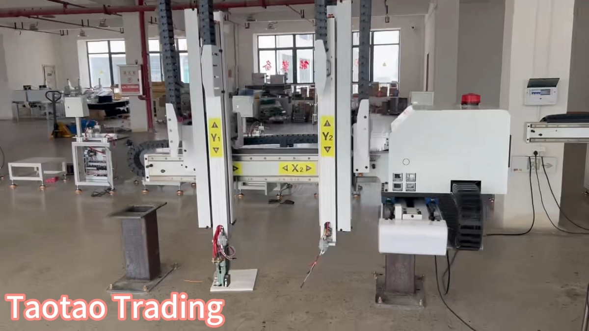

Original Taotao factory-visit image. It shows general production context, not proof that any supplier or sample has passed a specific check.
A supplier says, “We can send a sample.” Before you pay, ask a more useful question: What decision is this sample supposed to support?
A sample can help you review appearance, dimensions, assembly or packaging. It may also be prepared for laboratory testing, used as an approved reference or pulled from production for comparison. Those are different jobs. One sample should not silently become evidence for all of them.
Why the purpose matters
The UK's Vehicle Certification Agency describes type approval as a process involving selected and tested samples, documentation of the specification and measures for Conformity of Production. A tested item, its documented configuration and ongoing production control are connected—but they are not interchangeable.
A development sample can look excellent while the compliance scope, production method or final packaging remains unconfirmed.
Use a sample-purpose record
- Decision: appearance review, fit check, lab test, approval reference, pre-production sign-off or production comparison.
- Exact item: model, revision, size, material, colour and configuration.
- Source: where and when the sample was made or selected.
- Evidence attached: drawing, specification, photos, test request, certificate or inspection record.
- What it may prove: the narrow questions this sample can answer.
- What it cannot prove: anything still untested, undocumented or outside the sample's configuration.
- Next gate: who decides, by what date, and what happens after approval.
This turns “sample approved” into a traceable decision instead of an ambiguous chat message.
Match the sample to the decision
Development sample
Review shape, fit, finish and early function. Still request the final specification, change list and production method.
Test/compliance sample
Test a defined configuration. Link it to the test request, exact model and document scope.
Approved reference
Freeze buyer-accepted details with dated photos, a signed specification and change-control rule.
Pre-production or retention sample
Check planned production or actual batch output against the approved reference and inspection record.
How to verify the link
- Compare the model and revision on the sample record with the quotation and specification.
- Check whether the tested or certified configuration is the one being purchased.
- Ask whether the item came from normal production, pilot production or a sample room.
- Record tolerances and cosmetic acceptance with photos or measurable limits.
- Require written approval before changing a controlled material, component, process, label or package.
For regulated products, let the destination-market authority, accredited laboratory or qualified adviser confirm the applicable requirements.
Red flags and limitations
- the supplier cannot state whether the item is a development, test or production sample;
- the model, size, material or revision differs across the sample, quotation and report;
- “same as sample” is used without a signed specification or tolerances;
- a certificate image is offered without a clear link to the supplied configuration;
- requested changes are accepted verbally but not added to the sample record; or
- approval is being used to justify a deposit while production evidence is still missing.
Continue / Pause / Escalate
Continue when purpose, configuration, evidence and the next gate all match.
Pause when the sample may be useful but one material link—such as revision, test scope or production source—is missing.
Escalate when a regulated claim, critical safety feature or major mismatch needs an approval authority, accredited laboratory, engineer or destination-market adviser.
One practical action today
Before paying the next sample invoice, ask the supplier to complete the seven-field sample-purpose record. If the answers do not fit on one page, the approval basis is probably not clear enough yet.
Official references
- UK Vehicle Certification Agency: What is Vehicle Type Approval?
- NHTSA interpretation: what the DOT helmet symbol represents
- NHTSA Laboratory Test Procedure TP-218-07
Related buyer guides
- China Sourcing Checklist: 12 Questions Before a Purchase Order
- Supplier Verification, Factory Audit, Inspection or Lab Test?
- How to Compare Chinese Supplier Quotes Beyond the Lowest Price
- Factory Visits & Reviews